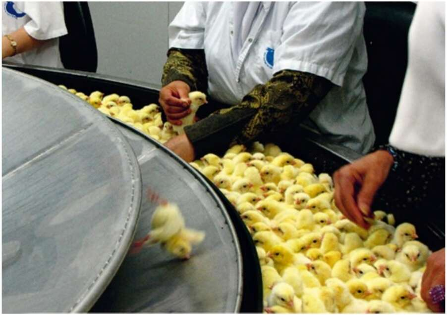

40. Chicks on a conveyor belt in a commercial hatchery. Male chicks and imperfect female chicks are picked off the conveyor belt and are then asphyxiated in gas chambers, dropped into automatic shredders, or simply thrown into the rubbish, where they are crushed to death. Hundreds of millions of chicks die each year in such hatcheries. Just as the Atlantic slave trade did not stem from hatred towards Africans, so the modern animal industry is not motivated by animosity. Again, it is fuelled by indifference. Most people who produce and consume eggs, milk and meat rarely stop to think about the fate of the chickens, cows or pigs whose flesh and emissions they are eating. Those who do think often argue that such animals are really little different from machines, devoid of sensations and emotions, incapable of suffering. Ironically, the same scientific disciplines which shape our milk machines and egg machines have lately demonstrated beyond reasonable doubt that mammals and birds have a complex sensory and emotional make-up. They not only feel physical pain, but can also suffer from emotional distress. Evolutionary psychology maintains that the emotional and social needs of farm animals evolved in the wild, when they were essential for survival and reproduction. For example, a wild cow had to know how to form close relations with other cows and bulls, or else she could not
